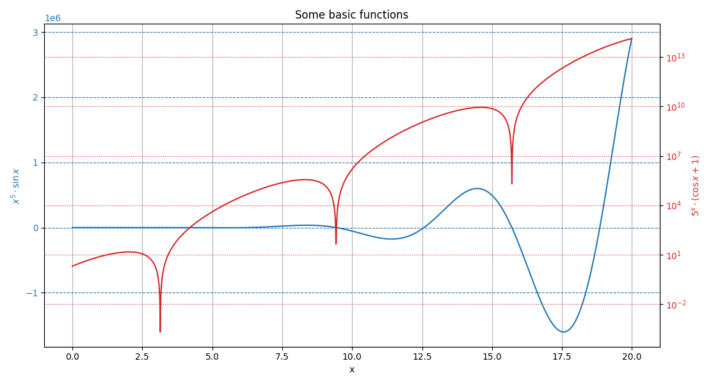
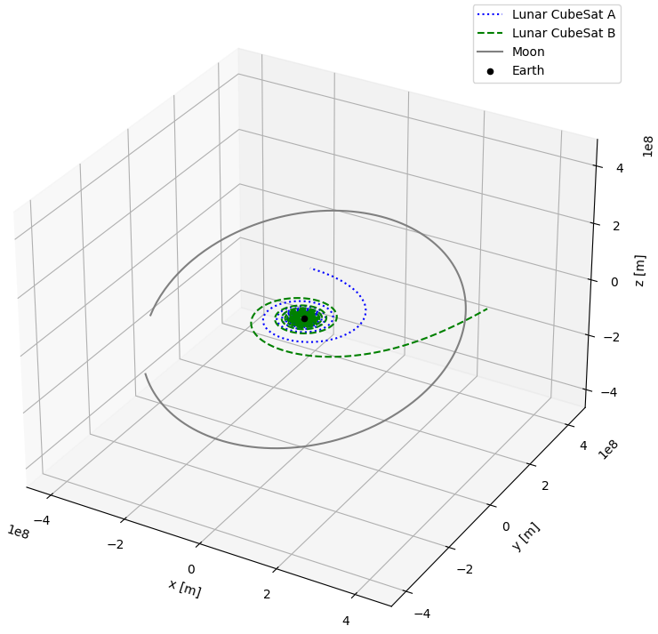
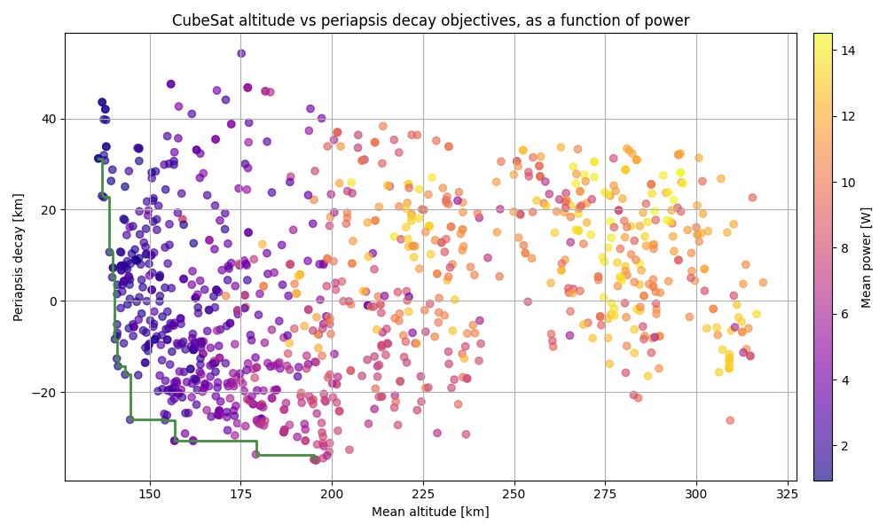

plotting¶
Plotting stuff!
This module contains utility functions to make characteristic plots of astrodynamics applications. It will also include shortcuts to plot the output of numerical simulations.
Functions¶
|
Plot two y-axis that share a common x-axis. |
|
Plot the trajectory specified bodies in 3D. |
|
Plot dual-objective optimisation solutions with their associated Pareto front. |
- dual_y_axis(x_data: list, y_data_1: list, y_data_2: list, x_label: str, y_label_1: str, y_label_2: str, title: str = '', c1: str = 'tab:blue', c2: str = 'tab:red', grid: str = '')[source]¶
Plot two y-axis that share a common x-axis.
- Parameters:
x_data (list) – List of common values that constitute the x-axis.
y_data_1 (list) – List of values that constitute the first (left) y-axis.
y_data_2 (list) – List of values that constitute the second (right) y-axis.
x_label (str) – Label of the common x-axis.
y_label_1 (str) – Label of the first (left) y-axis.
y_label_1 – Label of the second (right) y-axis.
title (str, optional) – Title of the plot.
c1 (str, optional, default = "tab:blue") – Color of the first (left) y-axis.
c2 (str, optional, default = "tab:red") – Color of the second (right) y-axis.
grid (str, optional) – Indication on where to use a grid. This variable can take the value “left”, “right”, or “both” to indicate relative to which y-axis the grid should be made. Using any of these options will put a grid relative to the common x-axis.
Examples
# Define data to be plotted x = np.arange(0, 20, 0.01) y1 = x**5*np.sin(x) y2 = 5**x*(np.cos(x)+1) # Plot the results from the two functions of x fig, ax1, ax2 = dual_y_axis( x, y1, y2, "x", "$x^5 \cdot \sin x$", "$5^x \cdot (\cos x + 1)$", title="Some basic functions", grid="both") # Set the second (right) axis scale as a log ax2.set_yscale("log") # Show the plot plt.show()
- Returns:
fig (matplotlib.figure.Figure) – Figure containing the dual y-axis plot.
ax1 (matplotlib.axes.Axes) – First axis, corresponding to the left y-axis (and containing the shared x-axis).
ax2 (matplotlib.axes.Axes) – Second axis, corresponding to the right y-axis (and containing the shared x-axis).
{kind=link}
- trajectory_3d(vehicles_states: Dict[float, ndarray], vehicles_names: List[str], central_body_name: str, spice_bodies: List[str] = [], frame_orientation: str = 'J2000', center_plot: bool = False, colors: List[str] = [], linestyles: List[str] = [])[source]¶
Plot the trajectory specified bodies in 3D.
This function allows to plot the 3D trajectory of vehicles of which the state has been propagated, as well as the trajectory of bodies taken directly from the SPICE interface.
- Parameters:
vehicles_states (Dict[float, numpy.ndarray]) – Dictionary mapping the simulation time steps to the propagated state time series of the simulation bodies.
vehicles_names (List[str]) – List of the name of the simulated body for which the trajectory must be plotted. Use an empty string in the list to skip a specific body.
central_body_name (str) – Name of the central body in the simulation
spice_bodies (List[str], optional) – List of the name of bodies for which the trajectory has to be taken from SPICE and plotted.
frame_orientation (str, optional, default="J2000") – Orientation of the reference frame used in the simulation.
center_plot (bool, optional, default=False) – If True, the central body will be centered on the plot.
colors (List[str], optional) – List of colors to use for the trajectories. In order, the colors will first be used for the vehicles and then for the SPICE bodies.
linestyles (List[str], optional) – List of linestyles to use for the trajectories. In order, the linestyles will first be used for the vehicles and then for the SPICE bodies.
Examples
After the propagation of two CubeSats on which thrust is applied, we can for instance plot both of their trajectories, as well as the trajectory of the Moon, using the following code snippet:
# Plot the trajectory of two satellite and the Moon around the Earth fig, ax = plotting.trajectory_3d( vehicles_states=dynamics_simulator.state_history, vehicles_names=["Lunar CubeSat A", "Lunar CubeSat B"], central_body_name="Earth", spice_bodies=["Moon"], linestyles=["dotted", "dashed", "solid"], colors=["blue", "green", "grey"] ) # Change the size of the figure fig.set_size_inches(8, 8) # Show the plot plt.show()
- Returns:
fig (matplotlib.figure.Figure) – Figure containing the 3D plot.
ax (matplotlib.axes.Axes) – 3D axis system used to plot the trajectory.
{kind=link}
- pareto_front(x_objective: list, y_objective: list, x_label: str, y_label: str, title: str = '', c_parameter: list | None = None, c_label: str = '', cmap: ~matplotlib.colors.Colormap | str = 'viridis', operator: ~typing.List[min | max] = [<built-in function min>, <built-in function min>], alpha: float = 0.85)[source]¶
Plot dual-objective optimisation solutions with their associated Pareto front.
This function allows to plot the cloud of points that results from an optimisation that contains two objectives, with the x and y axis both representing one of the optimisation objectives. A Pareto front is also automatically added to the plot, to represent the suite of optimum solutions. Optionally, information on a third design or optimisation parameter can also be incorporated to the plot in the form of a colormap.
- Parameters:
x_objective (List[float]) – List of values representing the score of each solution according to a first optimisation objective.
y_objective (List[float]) – List of values representing the score of each solution according to a second optimisation objective.
x_label (str) – Label of the x-axis.
y_label (str) – Label of the y-axis.
title (str, optional) – Title of the plot.
c_parameter (List[float], optional) – List of values representing an extra design or optimisation parameter, coloring the cloud of points.
c_label (str, optional) – Label of the colorbar that is used to represent the optional third objective.
cmap (str or matplotlib.colors.Colormap, optional, default="viridis") – Colormap to use to represent the optional third objective.
operator (List[min,max], optional, default=[min,min]) – List used to indicated if each of the two main objectives should be minimised or maximised.
alpha (float, optional, default=0.85)
Examples
The following example is based on the optimisation of the orbit of a CubeSat flying at very low altitude. The two main optmisation objectives were to minimise the mean orbital altitude, and minimise the loss in periapsis over a few years. The pareto_front function is then used to plot the optimisation results related to both of these objectives. In addition, a colormap is used to represent the mean power that the CubeSat was receiving in each of the computed orbits.
# Generate fake result from an optimisation mean_altitudes = np.random.gamma(100, 2, 1000) periapsis_decays = np.random.gamma(10, 5, 1000) mean_powers = np.random.normal(8, 3, 1000) # Plot the two main objectives, using colors to represent the mean power fig, ax = plotting.pareto_front( x_objective=mean_altitudes, y_objective=periapsis_decays, x_label="Mean altitude [km]", y_label="Periapsis decay [km]", title="CubeSat altitude vs periapsis decay objectives, as a function of power", c_parameter=mean_powers, c_label="Mean power [W]", cmap="plasma", alpha=0.65 ) # Show the plot plt.show()
Running this code snippet results in a figure similar to the one below. Do note that the code snippet uses randomly generated data, while the figure shown below is the real optimisation result.
- Returns:
fig (matplotlib.figure.Figure) – Figure containing the plot.
ax (matplotlib.axes.Axes) – Axis used to make the plot.
{kind=link}